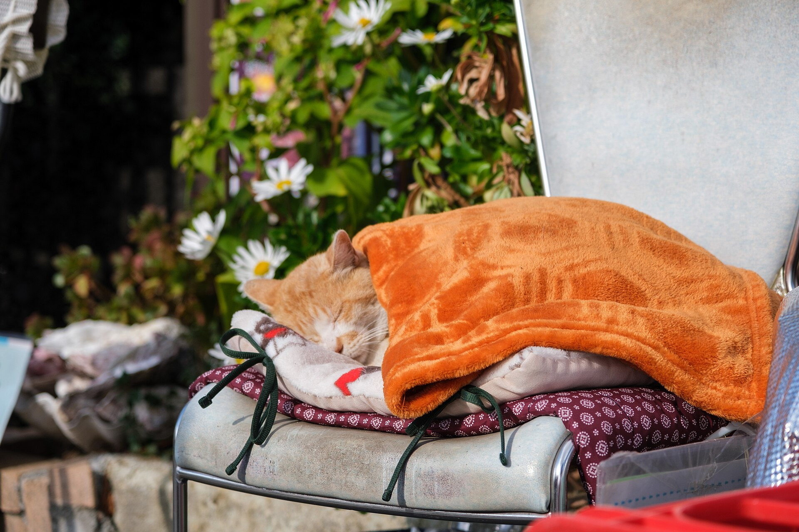
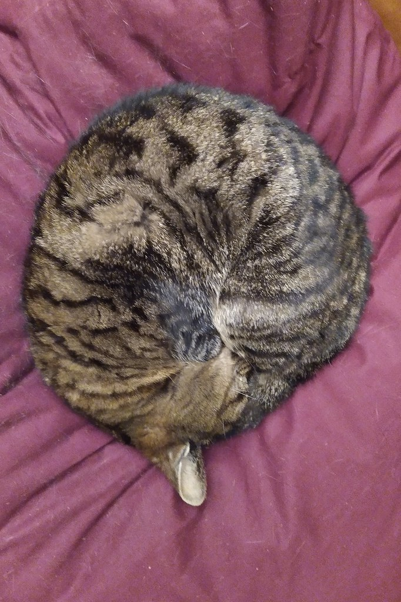
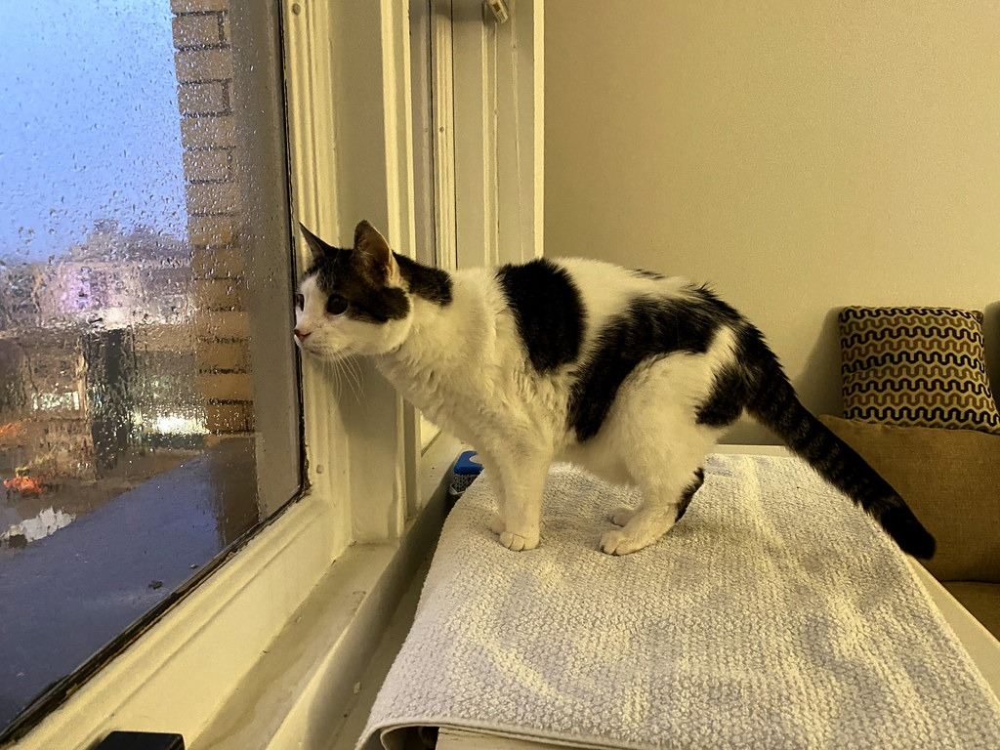
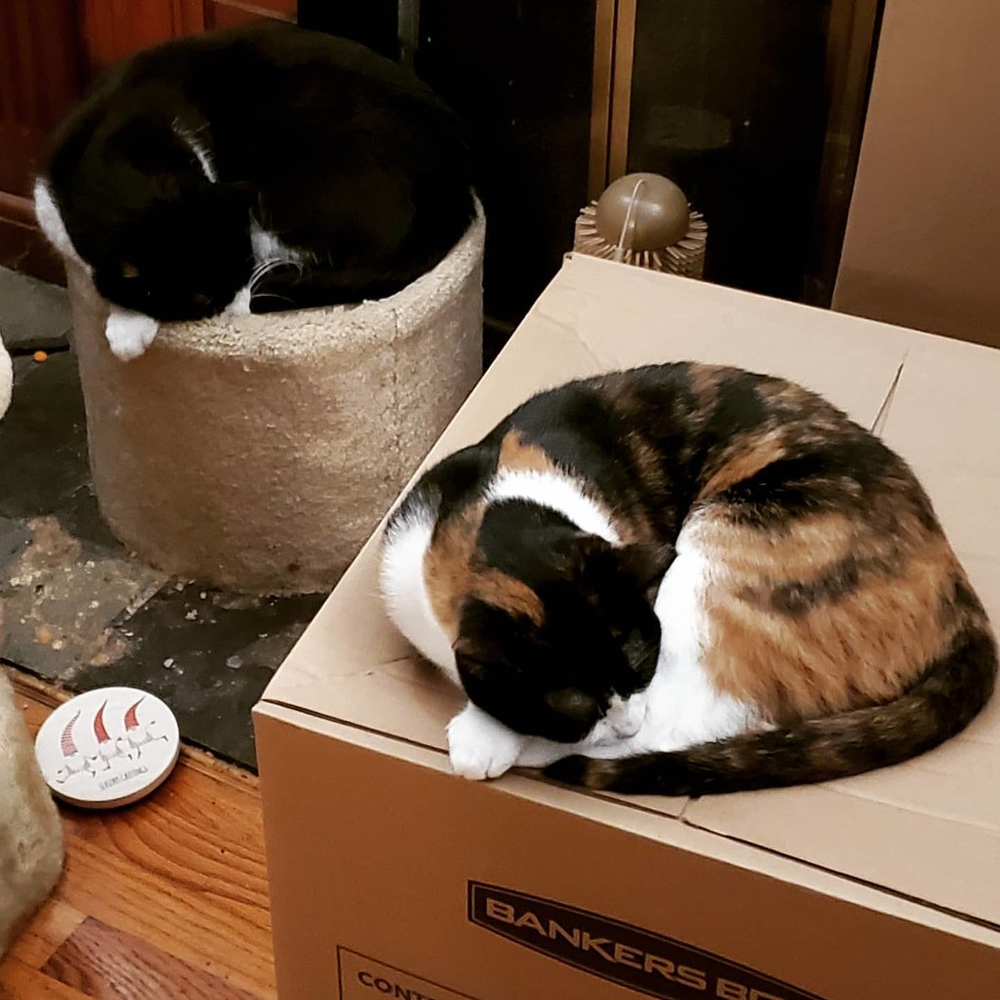

猫の寒さ対策ガイド：寒がりのサインと、冬の部屋づくり7つのコツ
公開 2026-10-25・日本ねこ編集部
結論から

朝晩が
猫の
猫が「寒い」と感じているときのサイン
猫は
- 体を
ぎゅっと ：しっぽで丸めて 寝ている 鼻先まで くるんと 包んだ 「アンモニャイト」は、 熱を 逃が さない ための 寝方です。 - 毛を
ふくらませている ：空気の層を つくって 体温を 守っています。 - 暖かい
場所から ：日なた、動かない 家電の 上、 人の 布団から 出て こない。 - 耳の
先や ：さわった肉球が 冷たい ときに ひんやりしていたら 要注意です。 - 水を
飲む量が ：冬は減る 飲水量が 落ちやすく、 これが あとで 書く 「冬の 水分 不足」に つながります。
反対に、

冬の室温と湿度の目安
| 室温の | ひとこと | |
|---|---|---|
| 成猫 | 20〜26℃前後 | 暖かい |
| 子猫 | やや | 体温調節が |
| シニア猫 | 22〜27℃前後 | 筋肉が |
| 湿度 | 40〜60％ | 乾燥しすぎは |
ここで
冬の部屋づくり7つのコツ
1. 「暖かい場所」と「逃げ場」をセットで
猫は
2. 寝床は床から少し高く
冷たい
3. 窓ぎわの冷気をふさぐ
日な

4. ドーム型ベッドや毛布を一枚足す
猫は

5. 水は「飲みたくなる」工夫を
冬は
6. 加湿器は猫が届かない場所に
乾燥対策の
7. 留守番の日はエアコンを弱めに
留守番中は
こたつ・湯たんぽ・ヒーターで気をつけたいこと
冬の
- こたつ：温度は
「弱」に。 猫が 出入りできるよう 布団に 少し すき間を 残し、 長時間こもりきりに ならないよう、 ときどき様子を 見てあげてください。 - 湯たんぽ・ペット用ヒーター：必ず
カバーで 包み、 寝床の 半分だけに 敷きます。 猫が 「熱い」と 思ったら 自分で 離れられる 置き方が 基本です。 - ストーブ・ファンヒーター：しっぽや
ヒゲが 近づきすぎないよう、 ガードで 囲みます。
どれも
こんなときは動物病院へ
寒さ対策を
まとめ
猫の
今夜、
参考にした情報
- 老猫が
快適な （All About ニュース）冬の 室温は 「22~27℃」 獣医師が おすすめする 暖房器具は? 【獣医師に 聞いた 】
この
よくある質問
猫にとって冬の室温は何度くらいが目安ですか？
一般的には
猫は寒いとどんなしぐさをしますか？
体を
留守番中、暖房はつけっぱなしでいいですか？
エアコンを
こたつや湯たんぽは猫に使っても大丈夫ですか？
使えますが、